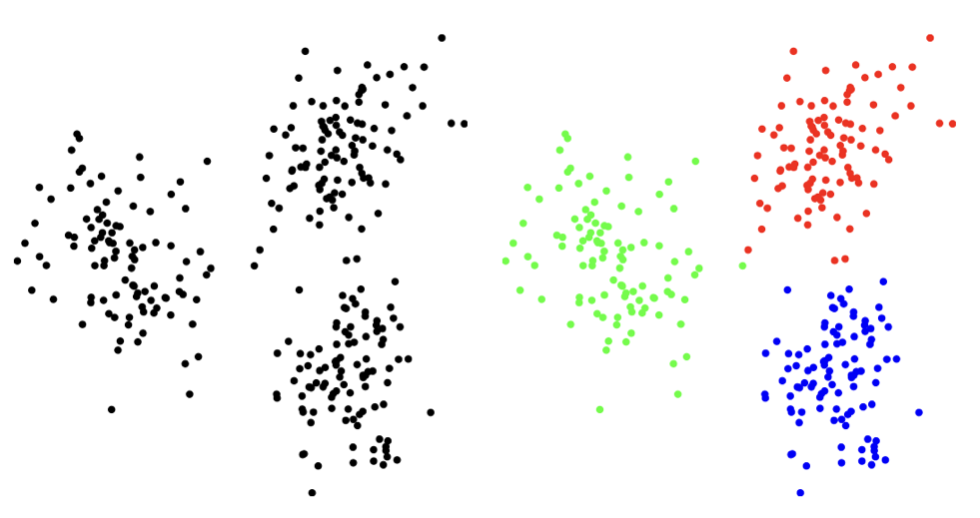

수학의 기초 1. 함수
chapter 1. 선형대수 개념
1. 선형대수 정의
선형대수는 벡터 공간과 그 안에 존재하는 벡터 간의 관계를 다루는 수학의 한 분야로, 벡터와 행렬을 이용한 수학적 표현과 계산을 중심으로 구성된다. 이 분야의 기본 구성 요소로는 벡터, 행렬, 스칼라가 있으며, 주요 개념에는 선형 변환, 고유값과 고유벡터, 내적과 외적, 행렬의 분해 등이 포함된다.
통계학에서 선형대수는 데이터를 벡터와 행렬의 형태로 구조화함으로써 복잡한 수치 연산을 간결하게 수행할 수 있도록 돕는다. 특히 고차원 데이터의 계산과 변환을 수학적으로 명확하게 정의할 수 있기 때문에, 데이터 구조를 이해하고 차원을 축소하는 데 핵심적인 도구로 사용된다.
이러한 선형대수의 기법은 통계 모델링과 머신러닝의 기초가 되며, 회귀 분석이나 주성분 분석(PCA), 군집 분석 등 다양한 통계적 방법론에서 필수적인 역할을 수행한다. 결과적으로, 선형대수는 현대 통계학에서 이론적 기반뿐 아니라 실용적 계산의 핵심 수단으로 작용한다.
2. 선형대수와 선형변환
선형대수는 선형적인 관계를 다루는 수학의 한 분야로, 이 이론 체계 내에서 이루어지는 연산과 변환은 모두 선형성을 만족해야 한다. 이러한 특성 때문에 일반적인 함수는 선형대수의 중심 개념으로 다루어지지 않지만, 함수의 특수한 형태인 선형 변환은 예외적으로 핵심 개념으로 간주된다. 선형 변환은 벡터 공간의 구조를 보존하면서 벡터를 다른 벡터로 사상하는 과정을 의미하며, 행렬을 이용해 구체적으로 표현될 수 있다. 따라서 선형 변환은 선형대수의 이론과 응용 모두에서 중심적인 역할을 수행한다.
함수 \(y = f(x)\)
- 함수는 두 집합 사이의 관계로, 각 입력값(정의역, domain)에 대해 정확히 하나의 출력값(공역, range)을 대응시키는 규칙이다.
- 함수는 일반적으로 \(f:D \rightarrow R\)와 같이 표기되며, \(D\)는 정의역, \(R\)는 공역입니다.
- 특정함수에 대하여 함수값이 0인 \(f(x) = 0\)를 방정식이라 하고 이를 만족하는 \(x\)를 방정식의 해(root, solution)라고 한다.
선형함수
선형함수는 입력 변수와 출력 변수 사이의 관계를 직선으로 나타내는 함수로, 일반적으로 다음과 같은 형태로 표현된다: \(f(x) = a + bx\), \(a:\) 절편, \(b:\) 기울기
가법성 additivity: \(f(x + y) = f(x) + f(y)\)
동차성 homogeniety: \(f(cx) = cf(x)\), \(c\)는 상수
선형변환
선형 변환(linear transformation)은 벡터 공간에서 정의된 함수 중 하나로, 한 벡터를 동일하거나 다른 벡터 공간의 또 다른 벡터로 변환하는 함수의 특수한 형태이다. 이 변환은 선형성(linearity)이라 불리는 다음의 두 가지 성질을 만족해야 한다. \(\underset{¯}{u},\underset{¯}{v}\) 동일 차원의 벡터에 대하여 함수 \(T\)가 다음 조건을 만족하면 선형변환이다.
덧셈에 대한 선형성: \(T(\underset{¯}{u} + \underset{¯}{v}) = T(\underset{¯}{u}) + T(\underset{¯}{v})\)
스칼라 곱에 대한 선형성: \(T(c\underset{¯}{u}) = cT(\underset{¯}{u})\)

chapter 2. 벡터 vector 기초
1. 벡터정의
벡터는 정렬된 유한한 수들의 목록으로, 일반적으로 정사각형 괄호 또는 곡선 괄호로 둘러싸인 수직 형태의 배열로 표현된다. 이러한 형태는 수평 배열인 행벡터(row vector)와 구별하여 열벡터(column vector)라고 부른다.
\(\left( \begin{array}{r} 1 \\ - 2 \\ 0 \end{array} \right)\), \(\left\lbrack \begin{array}{r} 1 \\ - 2 \\ 0 \end{array} \right\rbrack\)벡터를 행으로 사용할 때는 쉼표로 구분되고 괄호로 둘러싸인 숫자로 쓴다. \(\left( \begin{array}{r} 1, - 2,0 \end{array} \right)\)
배열의 값을 벡터의 원소 element 라 하고 원소의 개수를 벡터의 크기(차원 demension)라고 한다. 위 벡터는 크기가 3 이고 세 번째 원소는 0 이다. n 크기의 벡터는 n-벡터라고 불리고 1벡터는 숫자와 같은 것으로 간주한다. 즉, 우리는 1-벡터 [ 13 ]와 숫자 13을 구별하지 않으며 숫자는 스칼라 scalar 라 한다. 벡터의 각 원소는 스칼라이고 원소가 실수인 \(a_{i} \in R^{n}\) 벡터를 실수 벡터라 한다.
2. 벡터 기호
n-벡터를 나타내기 위해 \({\underset{¯}{a}}_{n}\)(구별이 가능한 경우 알파벳 \(a\)를 벡터로 표현) 기호를 사용한다. \(a_{n}\)벡터 의 i-번째 요소는 \(a_{i}\)로 표시되며, 여기서 첨자 i는 벡터의 크기인 1에서 \(n\)까지 정의되는 정수 인덱스이다.
두 벡터 \(a_{n},b_{n}\)가 동일하다는 것은 (1)크기(차수)도 \(n\) 동일하고 (2) 각 대응 원소가 동일 \(a_{i} = b_{i}\)함을 의미한다.
3. 특수한 벡터
(1) 영벡터 zero vector
모든 원소가 0인 벡터이며 \(0_{n}\)으로 표현된다. 일반적으로 모든 0 벡터는 0으로 표시되며, 숫자 0을 나타내는데 사용되는 것과 동일한 기호이다. 다른 크기의 제로 벡터를 나타내기 위해 모두 같은 기호 0을 사용하므로 기호 0은 문맥에 따라 다른 것을 의미할 수 있기 때문에 컴퓨터에서는 이를 과부하라 한다.
(2) 단위벡터 unit vector
(표준) 단위 벡터는 1인 하나의 원소를 제외한 모든 요소가 0과 같은 벡터이다. i-번째 단위 벡터(n 크기)는 i-번째 원소만 1을 가진 단위 벡터이며, \(e_{i}\)로 표현한다. 이렇게 되면 크기를 나타내는 첨자와 1인 원소 위치를 나타내는 첨자가 구별이 되지 않는 모호성을 갖는다.
(3) 일벡터 ones vector
모든 원소가 1인 n-벡터이며 \(1_{n}\)로 표현한다. 우리는 또한 벡터의 크기가 문맥에서 결정될 수 있다면 1로 쓴다.
4. 벡터 개념
(1) 위치 location
2차원 공간, 즉 평면의 위치를 나타내는 데 사용될 수 있다. 3-벡터는 3차원(3-D) 공간에서 어떤 지점의 위치나 위치를 나타내는 데 사용된다. 벡터의 원소는 위치의 좌표를 제공한다.
벡터는 주어진 시간에 평면이나 3차원 공간에서 움직이는 지점의 속도나 가속도를 나타내는 데 사용될 수 있다.
(2) 희소성
많은 원소가 0이면 희소하다고 한다. 그것의 희소성 패턴은 0이 아닌 항목의 인덱스 집합이다. \(n\)-벡터 \(a_{n}\)의 0이 아닌 항목의 수는 \(nnz(a_{n})\)로 표시한다다. 단위벡터는 0이 아닌 항목이 하나만 있기 있고 0 벡터는 0이 아닌 항목이 없기 때문에 희소한 벡터이다.
(3) 이미지
3차원 벡터는 빨간색, 녹색 및 파란색(R-G-B) 강도 값(0에서 1 사이)을 제공하는 항목을 통해 색상을 나타낸다. 벡터(0,0,0)는 검은색을 나타내고, 벡터(0, 1, 0)는 밝은 순수한 녹색을 나타내며, 벡터(1, 0.5, 0.5)는 분홍색을 나타낸다.
chapter 3. 벡터 연산과 크기
1. 벡터 연산
(1) 벡터 합
두 벡터를 합을 구한다는 것은 (1) 차수가 동일한 두 벡터의 (2) 동일 위치의 원소를 합하여 하나의 벡터를 계산한다는 것을 의미한다. 차도 동일하다.
\(\left\lbrack \begin{array}{r} 1 \\ - 2 \\ 0 \end{array} \right\rbrack + \left\lbrack \begin{array}{r} 1 \\ 2 \\ 3 \end{array} \right\rbrack = \left\lbrack \begin{array}{r} 2 \\ 0 \\ 3 \end{array} \right\rbrack\), \(\left\lbrack \begin{array}{r} 1 \\ - 2 \\ 0 \end{array} \right\rbrack - \left\lbrack \begin{array}{r} 1 \\ 2 \\ 3 \end{array} \right\rbrack = \left\lbrack \begin{array}{r} 0 \\ - 4 \\ - 3 \end{array} \right\rbrack\)
성질
차수가 동일한 벡터 \(a,b,c\)에 대하여 다음이 성립한다.
교환법칙 : \(a + b = b + a\)
교환법칙 : \((a + b) + c = a + (b + c)\)
영벡터를 더하거나 빼도 영향을 받지 않는다. \(a \pm 0 = a\)
벡터에서 자체 벡터를 빼면 영벡터가 된다. \(a - a = 0\)
(2) 스칼라-벡터 곱
벡터에 스칼라(즉, 숫자)를 곱하는 스칼라-벡터 곱셈은 벡터의 모든 요소에 스칼라를 곱하여 수행한다. 일반적으로 스칼라를 왼쪽, 벡터를 오른쪽에 적지만 순서를 바꾸어 사용해도 되고 계산 결과는 동일하다.
\(a = \left\lbrack \begin{array}{r} 1 \\ - 2 \\ 0 \end{array} \right\rbrack\)이면 \(3a = a3 = \left\lbrack \begin{array}{r} 3 \\ - 6 \\ 0 \end{array} \right\rbrack\)
성질
벡터 \(a\), 스칼라 \(c,k\)에 대하여 다음이 성립한다.
교환법칙 : \(ka = ak\)
배분법칙 : \((c + k)a = ca + ka\)
(3) 선형 결합 linear combination
차수 \(n\)-벡터 \(a_{1},a_{2},...,a_{m}\), 스칼라 \(k_{1},k_{2},...,k_{m}\)에 대하여 다음 \(n\)-벡터를 벡터 \(a_{1},a_{2},...,a_{m}\)의 선형결합이라 하고 스칼라 \(k_{1},k_{2},...,k_{m}\)는 선형결합의 계수라 한다.
\[k_{1}a_{1} + k_{2}a_{2} + ... + k_{m}a_{m}\]
\(k_{1} = k_{2} = ... = k_{m} = 1\)이면, 선형결합은 벡터 합이다.
\(k_{1} = k_{2} = ... = k_{m} = \frac{1}{m}\)이면, 선형결합은 벡터 평균이다.
\(k_{1} + k_{2} + ... + k_{m} = 1\)이면, 선형결합은 affine 결합이라 하고 모든 계수가 양수인 경우 선형결합을 가중평균이라 한다.
(4) 내적 inner product
두 벡터 간의 관계를 정의하고 벡터의 길이와 각도 등의 개념을 도입하는 중요한 연산이다. 차수(\(m\))가 동일한 두 벡터 (\(u,v\))의 내적 곱은 다음과 같이 정의하고 결과는 스칼라이다.
\[u^{T}v = \lbrack u_{1},u_{2},...,u_{m}\rbrack\left\lbrack \begin{array}{r} v_{1} \\ v_{2} \\ ... \\ v_{m} \end{array} \right\rbrack = u_{1}v_{1} + u_{2}v_{2} + ... + u_{m}v_{m} = \overset{m}{\sum_{i = 1}}u_{i}v_{i}\]
단, \(u^{T}\)는 \(u\)의 전치 transpose라 하고 열벡터를 행벡터로 변환한 것이다.
【예제】
\[\lbrack 1,3,5\rbrack^{T}\left\lbrack \begin{array}{r} 0 \\ - 1 \\ 1 \end{array} \right\rbrack = (1)(0) + (3)( - 1) + (5)(1) = 2\]
내적 성질
unit 벡터 : \(e_{i}v = v_{i}\)
벡터 합 : \(1_{m}^{T}v = \overset{m}{\sum_{i = 1}}v_{i}\)
벡터 평균 : \(avg(v) = (1/n)1_{m}^{T}v = (1/n)\overset{m}{\sum_{i = 1}}v_{i}\)
벡터 제곱합 : \(v^{T}v = v_{1}^{2} + v_{2}^{2} + ... + v_{m}^{2} = \overset{m}{\sum_{i = 1}}v_{i}^{2}\)
Cauchy–Schwarz inequality
차수 동일한 두 벡터의 내적 inner product에 대하여 다음이 성립한다.
\[\parallel a^{T}b \parallel \leq \parallel a \parallel \parallel b \parallel\]
\[|\overset{n}{\sum_{i}}a_{i}b_{i}| \leq (\sum a_{i}^{2})^{\frac{1}{2}}(\sum b_{i}^{2})^{\frac{1}{2}}\]
(5) 외적 cross product
주로 3차원 공간에서 두 벡터로부터 새로운 벡터를 생성하는 연산입니다. 이 연산의 결과는 두 벡터에 모두 수직인 벡터이며, 크기는 두 벡터가 이루는 평행사변형의 면적에 해당합니다.
외적 정의
벡터 \(\underset{¯}{a} = (a_{1},a_{2},a_{3})\)와 벡터 \(\underset{¯}{b} = (b_{1},b_{2},b_{3})\) 의 외적 \(\underset{¯}{a} \times \underset{¯}{b}\) 는 다음과 같이 계산한다.
\(x\) 성분: \(a_{2}b_{3} - a_{3}b_{2}\)
\(y\) 성분: \(a_{3}b_{1} - a_{1}b_{3}\)
\(z\) 성분: \(a_{1}b_{2} - a_{2}b_{1}\)
【예제】 벡터 \(\underset{¯}{a} = (2,3,4)\)와 벡터 \(\underset{¯}{b} = (5,6,7)\)의 외적은 \(\underset{¯}{c} = \underset{¯}{a} \times \underset{¯}{b} = ( - 3,6, - 3)\) 이다.
외적은 벡터 \(\underset{¯}{a},\underset{¯}{b}\)와 수직(\({\underset{¯}{c}}^{T}\underset{¯}{a} = 0\), \({\underset{¯}{c}}^{T}\underset{¯}{b} = 0\))이며 외적의 크기(놈 norm)는 두 벡터가 이루는 평행사면형 면적이다.
2. 선형함수
선형함수 정의
\(f:R^{n} \rightarrow R\)는 크기 n-벡터를 실수(스칼라)로 매핑하는 함수이다. 함수 \(f(x)\)의 \(x_{1},x_{2},...,x_{n}\)은 함수 \(f\)의 인수 argument라 하고 결과 값 스칼라는 함수 값이다. \(f(x) = f(x_{1},x_{2},...,x_{n})\)
【예제】
\[f:R^{4} \rightarrow R$ : $f(x) = x_{1} - x_{2} + x_{4}^{2}\]
차수 n-벡터 \(a,x\)에 대하여 내적 함수 \(f(x) = a^{T}x = scalar\)는 선형함수일 때 다음이 성립한다. 단, \(\alpha,\beta\)는 스칼라, \((x,y)\)는 n-벡터이다. \(f(\alpha x + \beta y) = \alpha f(x) + \beta f(y)\)
선형함수 조건
다음 조건을 만족하는 \(f:R^{n} \rightarrow R\) 는 선형함수이다. 단, \(\alpha\)는 스칼라, \((x,y)\)는 n-벡터이다.
Homogeniety : \(f(\alpha x) = \alpha f(x)\)
Additivity : \(f(x + y) = f(x) + f(y)\)
(1) 절편 Affine 함수
선형 함수에 상수 항을 추가한 형태의 함수이다. 이는 선형 변환과 평행 이동을 결합한 함수로, 다음과 같은 수식으로 표현된다.
n-벡터, \(x\)에 대하여 다음 \(f\)는 절편 함수이다. 단, \(a\)는 n-벡터, \(k\)는 스칼라이다. \(f(a^{T}x + k) = a^{T}f(x) + k\)
【예제】 \(f(x) = 7 - 2x_{1} + 3x_{2} - x_{3}\), \(k = 7,a = \left\lbrack \begin{array}{r} - 2 \\ 3 \\ - 1 \end{array} \right\rbrack\)
(2) 선형함수의 내적 표현
\(e_{i}\) 단위벡터, \(x_{n}\) 차수 n-벡터, \(f\) 선형함수라 하면, \[\begin{matrix} f(x) & = f(x_{1}e_{1} + x_{2}e_{2} + ... + x_{n}e_{n}) \\ & = x_{1}f(e_{1}) + x_{2}f(e_{2}) + ... + x_{n}f(e_{n}) \\ & = a^{T}x,wherea^{T} = \lbrack f(e_{1}),f(e_{2}),...,f(e_{n})\rbrack \end{matrix}\]
(3) 사례 : sag 처짐 (단위: mm)
하중벡터 \(w = \left( \begin{array}{r} w_{1} \\ w_{2} \\ w_{3} \end{array} \right)\)(단위:톤), 변형 compliance 민감도 벡터 \(c = \left( \begin{array}{r} c_{1} \\ c_{2} \\ c_{3} \end{array} \right)\)(단위:mm/톤)이라면 교량 처짐 sag은 \(s = c^{T}w\) (하중 가중합)이다.
(4) 테일러 근사 Taylor proximation
함수 \(f:R^{n} \rightarrow R\)이 1차 미분이 가능하다고 하면 \(n\)-벡터 함수 \(f(x)\)의 근사값은 다음과 같이 구한다. 이를 1차 테일러 근사라 한다. 단, n-벡터 \(z\)는 n-벡터 \(x\)와 가까운 값이다.
\[\widehat{f}(x) = f(z) + \frac{\partial f}{\partial x_{1}}(z)(x_{1} - z_{1}) + ... + \frac{\partial f}{\partial x_{n}}(z)(x_{n} - z_{n})\]
【예제】
함수 \(f:R^{2} \rightarrow R\)을 \(f(x) = x_{1} + \exp(x_{2} - x_{1})\)라 하자. 이 함수는 선형함수는 아니다. 이를 선형함수로 근사하는 것을 테일러 근사라 한다. \(z = (1,2)\)라 하면,
\[\triangledown f(z) = \left\lbrack \begin{array}{r} 1 - \exp(z_{2} - z_{1}) \\ \exp(z_{2} - z_{1}) \end{array} \right\rbrack|_{z_{1} = 1,z_{2} = 2} = ( - 1.72,2.72)\]
그러므로 \(z = (1,2)\)에서 \(f(x)\)의 테일러 근사값은 다음과 같다:
\[\widehat{f}(x) = 3.718 + \left\lbrack \begin{array}{r} - 1.72 \\ 2.72 \end{array} \right\rbrack^{T}(\left\lbrack \begin{array}{r} x_{1} \\ x_{2} \end{array} \right\rbrack - \left\lbrack \begin{array}{r} 1 \\ 2 \end{array} \right\rbrack)\]
(5) 회귀모형
차원 2-예측(설명, 독립) 벡터 \(x = \left\lbrack \begin{array}{r} x_{1} \\ x_{2} \end{array} \right\rbrack\), 회귀계수 벡터 \(b = \left\lbrack \begin{array}{r} b_{1} \\ b_{2} \end{array} \right\rbrack\), 그리고 \(a\)을 절편 스칼라라 하면 회귀모형은 다음과 같다.
\(\widehat{y} = \left\lbrack \begin{array}{r} 1 \\ x \end{array} \right\rbrack^{T}\left\lbrack \begin{array}{r} a \\ b \end{array} \right\rbrack = {\overset{˜}{x}}^{T}\overset{˜}{b}\) OLS 추정치 : \(\widehat{\overset{˜}{b}} = ({\overset{˜}{x}}^{T}\overset{˜}{x})^{- 1}{\overset{˜}{x}}^{T}y\)
3. 벡터놈 norm
(1) 정의
벡터의 유클리디안 놈, \(\parallel x \parallel\)은 벡터의 크기에 대한 척도로 다음과 같이 구한다. 놈은 벡터의 원점에서의 거리이다.
\[\parallel x \parallel = \sqrt{x_{1}^{2} + x_{2}^{2} + ... + x_{n}^{2}} = \sqrt{x^{T}x}\]
【예제】
\[\parallel \left\lbrack \begin{array}{r} 0 \\ - 1 \\ 1 \end{array} \right\rbrack \parallel = \sqrt{2}$, $\parallel \left\lbrack \begin{array}{r} - 1 \\ 2 \end{array} \right\rbrack \parallel = \sqrt{5}\]
성질
비음수 동차성: \(\parallel \beta x \parallel = |\beta| \parallel x \parallel\), where \(\beta\)는 스칼라
삼각 부등식: \(\parallel x + y \parallel \leq \parallel x \parallel + \parallel y \parallel\)
비음수: \(\parallel x \parallel \geq 0\)
(2) 놈의 종류
L1 norm : \(L_{1} = \overset{n}{\sum_{i}}|x_{i}|\) 절대값의 합으로 맨하튼 Manhattan 놈이라고도 한다. 지도의 거리 측정에 사용된다.
L2 norm : \(L_{2} = (\overset{n}{\sum_{i}}x_{i}^{2})^{\frac{1}{2}}\) 제곱합의 제곱근으로 유클리디안 놈이라 한다. 통계학에서 가장 많이 사용된다. 회귀계수 추정치를 구하는 최소제곱추정치 구할 때 사용된다.

#행렬 정의
import numpy as np
A=np.array([[1,2,3], [4,5,7],[8,9,10]])
#L1 norm Mahattan
la.norm(A,axis=1,ord=1)【결과】 array([ 6., 16., 27.])
#L2 norm Euclidean
la.norm(A,axis=1,ord=2)【결과】 array([ 3.74165739, 9.48683298, 15.65247584])
(3) 평균 제곱근 RMS root mean square value
데이터 크기를 정량화하는데 사용되며 데이터의 평균적인 크기를 나타낸다. \(rms(x) = \frac{\parallel x \parallel}{\sqrt{n}} = \sqrt{\frac{1}{n}\sum x_{i}^{2}}\)
(4) 두 벡터의 합의 놈
\[\parallel x + y \parallel = \sqrt{\parallel x \parallel^{2} + 2x^{T}y + \parallel y \parallel^{2}}\]
(5) Chebyshev inequality
차수 n-벡터 \(x\), \(x_{i}^{2} \geq a^{2}\)을 만족하는 원소 개수를 \(k\)라 하면, \(\parallel x \parallel^{2} = x_{1}^{2} + ... + x_{2}^{2} \geq ka^{2}\)이다. \(k \leq n\)이므로 \(n \leq \frac{\parallel x \parallel}{a^{2}}\)이다. 즉, 벡터의 어떠한 원소도 그 벡터의 놈보다 크지 않다.
\(\frac{k}{n} \leq (\frac{rms(x)}{a})^{2}\). 왼쪽 항은 벡터의 성분 중 절대값이 최소한 \(a\)이상인 성분의 비율을 나타낸다. 오른쪽 항은 \(a\)와 \(rms(x)\)의 비율의 제곱에 대한 역수이다. 예를 들어, 벡터의 성분 중 1/25 = 4% 이상은 RMS 값의 5배를 초과할 수 없다는 것을 의미한다.
chapter 4. 벡터간 거리
1. 유클리디안 거리
(1) 정의
차수가 동일한 두 벡터(\(a,b\))의 놈을 유클리디안 거리로 정의한다.
\[dist(a,b) = \parallel a - b \parallel = \parallel b - a \parallel\]
\[||a - b|| = \sqrt{(a_{1} - b_{1})^{2} + (a_{2} - b_{2})^{2} + ... + (a_{n} - b_{n})^{2}}\]
두 벡터의 Root Mean Square 편차 = \(\frac{\parallel x - y \parallel}{\sqrt{n}}\)
【예제】
\[a = \left\lbrack \begin{array}{r} 0 \\ - 1 \\ 1 \end{array} \right\rbrack,b = \left\lbrack \begin{array}{r} 1 \\ - 2 \\ 1 \end{array} \right\rbrack,c = \left\lbrack \begin{array}{r} 1 \\ 0 \\3 \end{array} \right\rbrack\] \[dist(a,b) = \sqrt{2},dist(b,c) = 2.8284\]
#행렬 정의
import numpy as np
a=np.array([[0],[-1],[1]])
b=np.array([[1],[-2],[1]])
c=np.array([[1],[0],[3]])
#거리 계산
np.linalg.norm(a-b),np.linalg.norm(b-c)【결과】 (np.float64(1.4142135623730951), np.float64(2.8284271247461903))
(2) 활용
feature distance: \(\parallel x - y \parallel\) 차수가 동일한 두 벡터의 거리를 개체의 유사성 척도로 사용한다.
Nearest neighbor: \(\parallel x - z_{i} \parallel\) 두 개체 간의 거리를 이용하여 유사한 개체를 군집으로 묶는다. k-means 알고리즘
RMS prediction error: \(rms(y - \widehat{y})\) 관측치와 예측치의 거리를 예측의 정확도 척도로 사용한다.
#감성 분석
import numpy as np
from sklearn.neighbors import KNeighborsClassifier
from sklearn.feature_extraction.text import TfidfVectorizer
# 데이터 준비
texts = ["I love this product", "This is terrible", "Absolutely fantastic", "Not good at all"]
labels = [1, 0, 1, 0] # 1: 긍정, 0: 부정
# TF-IDF 벡터화
vectorizer = TfidfVectorizer()
X = vectorizer.fit_transform(texts)
# KNN 모델
knn = KNeighborsClassifier(n_neighbors=1, metric='euclidean')
knn.fit(X, labels)
# 새로운 리뷰 분류
new_text = ["I hate this product"]
new_vector = vectorizer.transform(new_text)
prediction = knn.predict(new_vector)
print(f"Prediction: {'Positive' if prediction[0] == 1 else 'Negative'}")【결과】 Prediction: Positive
(3) 삼각 부등식
차수가 동일한 n벡터 \(a,b,c\)에 대하여 다음이 발생한다.
\[\parallel a - c \parallel \leq \parallel a - b \parallel + \parallel b - c \parallel\]
(4) triangle 부등식
\[\parallel a + b \parallel^{2} \leq ( \parallel a \parallel + \parallel b \parallel )^{2}\]
(5) 맨해튼 거리
\[d(\mathbf{a},\mathbf{b}) = \overset{n}{\sum_{i = 1}}|a_{i} - b_{i}|\]
맨해튼 거리는 벡터 간의 축을 따라 이동한 거리의 합으로 이는 그리드 기반 공간에서 이동하는 경우에 적합하다. 맨해튼 거리라는 이름은 도로망이 격자 형태로 이루어진 맨해튼 도시 구조에서 유래되었다. 자동차나 사람이 이동할 때 대각선으로 이동하지 못하고 도로를 따라 움직이는 경우에 적합하다. 예: 두 위치 간 최단 이동 거리 계산.
2. 유클리디안 거리와 통계
(1) de-meanded 벡터
【reall】 치수 n-벡터 \(x_{n}\), 평균은 \(avg(x) = (1_{n}^{T}x)/n = (instat) = \overline{x}\)
【정의】 \(\overset{˜}{x} = x - avg(x)1_{n}\) : 벡터의 각 원소를 평균을 뺀 벡터
【성질】 \(avg(\overset{˜}{x}) = 0\)
통계 분석: 데이터의 평균을 제거함으로써 분산이나 공분산과 같은 통계적 특성을 더 명확하게 분석할 수 있다.
주성분 분석(PCA): 데이터의 분산을 분석하기 전에 데이터를 중심에 맞추기 위해 사용된다.
회귀 분석: 회귀 분석에서 독립 변수와 종속 변수의 평균을 제거하여 상수항 없이 회귀 모델을 구축할 수 있다.
(2) 표준편차 standard deviation
\[std(x) = \sqrt{\frac{(x_{1} - avg(x))^{2} + (x_{2} - avg(x))^{2} + ... + (x_{n} - avg(x))^{2})}{n}}\]
\[std(x) = \frac{\parallel x - (1^{T}x/n)1 \parallel}{\sqrt{n}}\]
【응용】 투자에서 평균은 일정기간 평균 수익율, 표준편차는 위험 척도이다.
표준편차 성질
상수를 더해도 표준편차는 동일하다. \(std(x + a1) = std(x)\)
스칼라(상수) 곱 : \(std(kx) = |k|std(x)\)
평균, RMS, STD 관계
\(std(x)^{2} = rms(x)^{2} - avg(x)^{2}\)
(in stat) \(std(x)^{2} = var(x)\) 분산
표준편차와 Chebychev 부등식
만약 차원 \(n\)-벡터에서 \(|x_{i} - avg(x)| \geq a\)을 만족하는 원소 개수를 \(k\)라 하면 \(\frac{k}{n} \leq (\frac{std(x)}{a})^{2}\)이다. 벡터 \(x\) 평균으로부터 \(k\) 표준편차 이내에 있는 성분 비율은 최소 \(1 - 1/k^{2}\)이다.
\[P(|X - \mu| > k\sigma) \leq 1 - \frac{1}{k^{2}}\]
예를 들어, 일정 기간 투자 평균 수익률은 8%이고, 리스크(표준편차)는 3%입니다. 체비셰프의 부등식에 따르면, 손실을 기록한 기간의 비율(즉, 0% 이하인 기간, 16% 이상인 기간)은 최대 (3/8)^2 = 14.1%이다.
(3) 실증적 규칙
\[P(|X - \mu| \leq k\sigma)\]
\(k = 1\), 데이터의 68.3%가 \((\mu - \sigma,\mu + \sigma)\) 내에 있음
\(k = 2\), 데이터의 95.4%, \(k = 3\), 데이터의 99.9%
특징 실증적 규칙 체비세프 규칙 분포가정 정규분포에만 적용 가능 모든 분포에 적용 가능 그래프 모양 종형 곡선(정규분포) 다양한 분포(정규분포, 비대칭, 멀티모달 등) 데이터 범위 평균과 표준편차로 대칭적인 확률 분포 최소한의 비율을 보장하며 보수적(더 큰 범위를 포함) 데이터 비율 ±1σ: 68%, ±2σ: 95%, ±3σ: 99.7% ±2σ: ≥75%, ±3σ: ≥88.9%
3. 거리와 개체 군집화
(1) 개념
\(N\)개의 차수 \(n\)-벡터 \((x_{1},x_{2},...,x_{N})\)에 대하여 각 벡터(개체) 쌍 사이의 거리로 측정하여 서로 가까운 클러스터 또는 클러스터로 묶는 작업을 다룬다. 클러스터링의 목표는 가능한 경우 벡터들을 \(k\)개의 클러스터 또는 클러스터로 묶거나 나누어, 각 클러스터 내의 벡터들이 서로 가깝도록 하는 것이다. 클러스터링은 벡터들이 객체의 특징을 나타낼 때 널리 사용된다. 다음은 \(n = 2\)(군집변수 2개), \(k = 3\)으로 클러스터링 한 사례이다.

(2) 클러스터 할당
\(N\)개 개체, \(x_{i}\)를 개체(\(i = 1,2,...,N\)), \(c_{i}\)는 \(i\)-개체가 할당된 클러스터이고 (\(j = 1,2,...k\)), \(G_{j}\)을 \(j\)-클러스터에 속한 개체의 집합이라 하자.
\[G_{j} = \{ i|c_{i} = j\}\]
클러스터을 대표하는 차원 \(n\)-벡터를 \(z_{1},z_{2},...,z_{k}\)라 하자. \(i\)-개체가 \(j = c_{i}\)에 있다면 \(\parallel x_{i} - z_{c_{i}} \parallel\)은 모든 클러스터 중 가장 가까워야 한다.
(3) 클러스터 목적
\(J^{clust} = ( \parallel x_{1} - z_{c_{1}} \parallel + \parallel x_{2} - z_{c_{2}} \parallel + ... + \parallel x_{N} - z_{c_{N}} \parallel )/N\) 함수를 최소화 하는 \(z_{c_{1}},z_{c_{2}},...,z_{c_{N}}\)을 구한다.
(4) 최적 클러스링
목적함수 \(J^{clust}\)을 최소화 하는 \(z_{c_{1}},z_{c_{2}},...,z_{c_{N}}\)을 찾는 것은 개체 수가 많고 차원 개수가 커지면 계산 회수가 기하 급수적으로 늘어나 불가능하다. 그러므로 최적 대신 차선 sub-optimal 방법으로 대표 벡터를 고정화 하는 k-평균 방법을 사용한다.
4. k-means 알고리즘
(1) 개념
클러스터 할당과 클러스터 대표자를 선택하여 \(J^{clust}\)를 최소화하는 문제를 해결할 수 있을 것처럼 보이나 두 가지 선택은 순환적입니다. 즉, 각각의 선택이 다른 하나에 의존한다. 클러스터 대표자를 선택하고 클러스터 할당을 선택하는 것을 반복하는 것이 벡터 집합을 클러스터링하는 데 있어서 유명한 k-means 알고리즘이다. k-means 알고리즘은 1957년에 Stuart Lloyd와 독립적으로 Hugo Steinhaus에 의해 처음 제안되어 때때로 Lloyd 알고리즘이라고도 불린다. k-means라는 이름은 1960년대부터 사용되었다.
(2) k-평균 알고리즘
\(N\)개 개체를 \(k\)개 클러스터으로 분류한다고 가정하자. \(z_{1},z_{2},...,z_{k}\)을 각 클러스터의 대표 벡터라 하자. k-평균 알고리즘은 다음 작업을 반복 실행한다.
대표 벡터를 결정하고 각 개체를 가장 가까운 대표 벡터의 클러스터으로 분류한다.
클러스터에 할당된 개체의 중심점(평균 벡터)을 대표 벡터로 설정한다.
수렴 조건 만족 때까지 위의 작업을 반복한다.
(3) 이슈사항
타이 브레이커: 두 개 이상의 클러스터과 최소 거리인 개체는 클러스터 할당을 하지 않는다. 그러므로 이 개체는 다음 단계에서 대표 벡터 결정에는 활용되지 않는다.
수렴 조건: 개체의 클러스터 이동이 더 이상 발생하지 않으면 대표 벡터는 움직이지 않음을 의미하므로 클러스터링 결과는 동일해진다.
k-평균 알고리즘은 직관적이다.: 목표함수 \(J^{clust}\)을 최적화 하지 못하지만 반복을 통하여 줄여 나가게 된다.
대표벡터 해석: 각 \(N\) 개의 회사마다 총 자본화, 분기별 수익 및 위험, 거래량, 손익, 배당금 등과 같은 금융 및 사업 속성을 구성 요소로 하는 n-벡터을 이용하여 k-평균 클러스터링 결과 얻은 대표벡터를 이용하여 클러스터(군집)에 이름을 부여한다. 기업연수, 기업종류, 매출액 등 군집변수로 사용하지 않은 특성 벡터를 이용하여 개체 군의 이름을 부여하고 해석한다.
클러스터 \(k\) 결정: \(k\) 의 결정은 다소 주관적이고 시행착오 방법을 사용한다. \((k,J^{clust})\)을 이용하여 Elbow Method 팔꿈치 기법을 사용한다. 군집 개수가 증가할수록 \(J^{clust}\)는 감소하게 되지만, 이 감소율이 꺾이는 지점을 찾아내는 방법이다.
고정 대표 벡터 분할하기: 만약 \(j\) 클러스터을 대표하는 벡터 \(z_{1},z_{2},...,z_{j}\)르 고정하면 모든 개체 \(x_{1},x_{2},...,x_{N}\)을 최적 클러스터으로 분류 문제는 다음과 같다.
\[\parallel x_{i} - z_{c_{i}} \parallel = min_{j = 1,2,...,k} \parallel x_{i} - z_{j} \parallel\]
고정 대표 벡터를 활용하면 최적 클러스터링 문제는 다음과 같이 sub 최적 문제로 변환된다. 각 \(N\)개 개체에 최적 \(j\)-클러스터(거리가 가장 가까운 클러스터)을 결정하는 개별적 문제와 동일하다.
\[J^{clust} = min_{j = 1,2,...,k} \parallel x_{1} - z_{j} \parallel + ... + min_{j = 1,2,...,k} \parallel x_{N} - z_{j} \parallel )/N\]
고정 벡터를 group(or cluster) centroid라 한다.
(4) 사례
# 60000(train 훈련)/10000(test 테스트), 28x28
import numpy as np
import matplotlib.pyplot as plt
from tensorflow.keras.datasets import mnist
# MNIST 데이터셋 로드 및 훈련데이터, 테스트데이터 분할
(x_train, y_train), (x_test, y_test) = mnist.load_data()
# 데이터 형태 출력
print(f"x_train shape: {x_train.shape}")
print(f"y_train shape: {y_train.shape}")
print(f"x_test shape: {x_test.shape}")
print(f"y_test shape: {y_test.shape}")
# 첫 10개 샘플 이미지와 레이블 시각화
num_samples = 10
plt.figure(figsize=(10, 1))
for i in range(num_samples):
plt.subplot(1, num_samples, i+1)
plt.imshow(x_train[i], cmap='gray')
plt.title(y_train[i])
plt.axis('off')
plt.show()
# 훈련 데이터 클러스트링, 첫 20개 군집결과
# 이미지 데이터를 2차원 배열로 변환
x_train2 = x_train.reshape((x_train.shape[0], -1))
x_test2 = x_test.reshape((x_test.shape[0], -1))
# 데이터 정규화
x_train2 = x_train2 / 255.0
x_test2 = x_test2 / 255.0
# k-means 모델 생성 및 학습
kmeans = KMeans(n_clusters=10, random_state=42)
kmeans.fit(x_train2)
# 클러스터 할당 결과
y_kmeans = kmeans.predict(x_train2)
# 첫 20개 분류결과 이미지와 레이블 시각화
num_samples = 20
plt.figure(figsize=(10, 1))
for i in range(num_samples):
plt.subplot(1, num_samples, i+1)
plt.imshow(x_train[i], cmap='gray')
plt.title(y_kmeans[i])
plt.axis('off')
plt.show()10개 클러스터명은 임의로 정해져 숫자와 매칭이 되지 않는다. 클러스터에 속한 이미지를 이용하여 결정한다. 클러스터9, 클러스터1에는 이미지 6/2이 두개이므로 숫자6,숫자2 클러스터으로 하면 된다. 클러스터3에는 2개 이지지 중 숫자5, 3, 8이 각각 1개이므로 나머지 클러스터3으로 분류된 이미지 번호 확인하여 숫자번호를 결정한다. 클러스터5에는 이미지9 2개, 이미지7, 이미지4 각각 1개이므로 클러스터5는 이미지9 군집으로 한다.
# 클러스터 대표 이미지
# 클러스터 3 평균벡터 출력
plt.figure(figsize=(10, 1))
plt.imshow((x_train[0]+x_train[7]+x_train[17])/3, cmap='gray')
plt.title('cluster 3')
plt.axis('off')
plt.show()5. 벡터의 각도
(1) 코사인 유사도
벡터의 코사인 유사도(Cosine Similarity)는 두 벡터 간의 방향적 유사성을 측정하는 지표로, 벡터 간의 각도 \(\theta\)의 코사인 값을 이용하여 계산된다.
\[\text{Cosine Similarity} = cos(\theta) = \frac{\mathbf{A} \cdot \mathbf{B}}{\parallel \mathbf{A} \parallel \parallel \mathbf{B} \parallel}\]
코사인 유사도와 유클리드 거리의 차이는 다음과 같다.
코사인 유사도는 두 벡터의 방향에 집중하며, 벡터 크기의 차이를 무시한다.
유클리드 거리는 두 벡터 사이의 실제 거리(크기 차이 포함)를 측정한다.
예를 들어, 텍스트 데이터에서 코사인 유사도는 문서 간의 내용적 유사성을 비교하는 데 유리하며, 추천 시스템, 정보 검색, 클러스터링 등에서 널리 사용된다.
【예제】
(2) 코사인 유사도의 특징
코사인 유사도 값의 범위는 [-1, 1]이고 다음의 특징을 갖는다.
\(cos(\theta) = 1\): 두 벡터가 완전히 같은 방향
\(cos(\theta) = 0\): 두 벡터가 직교(Orthogonal, 90도)
\(cos(\theta) = - 1\): 두 벡터가 완전히 반대 방향.
코사인 유사도는 벡터의 크기가 아닌 방향만 고려되므로 벡터를 정규화하지 않고도 비교할 수 있다. 고차원 벡터에도 적용 가능하여 텍스트 데이터, 사용자 선호도 등 고차원 데이터에서 벡터 간 유사성 측정에 많이 사용된다.
각도 종류
각도가 \(\theta = 90^{o} = \pi/2\)이면 두 벡터는 직교 orthogonal 한다.
각도가 \(\theta = 0^{o}\)이면 두 벡터는 정렬 aligned 되어 있다.
각도가 \(\theta = 180^{o} = \pi\)이면 두 벡터는 역정렬 anti-aligned 되어 있다.
각도가 \(\theta > 90^{o} = \pi/2\)이면 두 벡터의 각은 둔각 obtuse, \(\theta < 90^{o} = \pi/2\)이면 두 벡터의 각은 예각 acute 이다.
두 벡터 합의 놈과 각도
\[\parallel x + y \parallel^{2} = \parallel x \parallel^{2} + 2 \parallel x \parallel \parallel y \parallel \cos(\theta) + \parallel y \parallel^{2}\]
만약 \(\theta = 90^{o} = \pi/2\)이면 \(\parallel x + y \parallel^{2} = \parallel x \parallel^{2} + \parallel y \parallel^{2}\) (피타고라스 정리)
6. 상관계수
(1) 상관계수 정의
만약 \(\overset{˜}{a} = a - avg(a)1,\overset{˜}{b} = b - avg(b)1\)이면, 상관계수(correlation coefficient) \(\rho\)는 다음과 같이 정의된다.
\(\rho = \frac{{\overset{˜}{a}}^{T}\overset{˜}{b}}{\parallel \overset{˜}{a} \parallel \parallel \overset{˜}{b} \parallel}\) ⇔ \(\rho = (\frac{\overset{˜}{a}}{std(a)})^{T}(\frac{\overset{˜}{b}}{std(b)})/n\)
\(cov(a,b) = {\overset{˜}{a}}^{T}\overset{˜}{b}/n\): 두 벡터의 공분산
\(var(a) = std(a)^{2}\): 벡터의 분산
상관계수와 공분산 관계: \(cov(a,b) = \rho std(a)std(b)\)
\(\rho = \pm 1\) (완전 상관) : 두 벡터가 (역)정렬되어 있음
\(\rho = 0\) (독립) : 두 벡터가 직교되어 있음. \(cov(a,b) = 0\)
(2) 두 벡터 합의 분산
\[var(a + b) = var(a) + 2cov(a,b) + var(b)\]
\[var(a + b) = var(a) + 2\rho std(a)std(b) + var(b)\]
만약 \(\rho = 0\)이면, \(var(a + b) = var(a) + var(b)\)
만약 \(\rho = 1\)이면, \(var(a + b) = (std(a) + std(b))^{2}\)
만약 \(\rho = - 1\)이면, \(var(a + b) = (std(a) - std(b))^{2}\)
(3) 헤징 hedging 투자
두 개 회사 주가 벡터 \((a,b)\)의 평균은\(\mu\), 표준편차(위험) \(\sigma\)이고 상관계수는 \(\rho\)이다. 각각 50% 투자, \(c = \frac{(a + b)}{2}\)의 평균 수익율과 표준편차은 다음과 같다.
평균 : \(avg(\frac{a + b}{2}) = \mu\)
표준편차 : \(std(c) = \sigma\sqrt{(1 + \rho)/2}\)
상관계수 \(\rho = 0\)이면 (독립) 표준편차는 \(\frac{1}{\sqrt{2}}\)만큼 줄어든다.
완벽한 상관관계가 있는 경우에만 표준편차는 동일하다.
chapter 5. 선형독립
1. 선형독립 정의
(1) 선형 종속 linear dependence
\(k \geq 2\)개의 크기 n-벡터 \(x_{1},x_{2},...,x_{k}\)가 다음을 만족하면 선형종속이라 한다. 만약 \(a_{1}x_{1} + a_{2}x_{2} + ... + a_{k}x_{k} = 0\)을 만족하는 \(a_{i}\)가 적어도 하나는 0이 아니다.
선형독립이면 적어도 하나의 \(a_{i}\)는 0이 아니므로 벡터 \(x_{i}\) 다음과 같이 다른 벡터의 선형함수로 표현될 수 있다.
\[x_{k} = \frac{- a_{1}}{a_{i}}x_{1} + ... + \frac{- a_{i - 1}}{a_{i}}x_{i - 1} + \frac{- a_{i + 1}}{a_{i}}x_{i + 1} + ... + \frac{- a_{k}}{a_{i}}x_{k}\]
【예제】
\(x_{1} = \left\lbrack \begin{array}{r} > 0 \\ > - 1 \\ > 1 > \end{array} \right\rbrack,x_{2} = \left\lbrack \begin{array}{r} > 1 \\ > - 2 \\ > 1 > \end{array} \right\rbrack,x_{3} = \left\lbrack \begin{array}{r} > 1 \\ > 0 \\ > - 1 > \end{array} \right\rbrack\) ⬄\(- 2x_{1} + x_{2} - x_{3} = 0\)
(2) 선형 독립 linear independence
만약 \(a_{1}x_{1} + a_{2}x_{2} + ... + a_{k}x_{k} = 0\)이 모든 \(a_{k} = 0\)일 때만 만족한다면, n-벡터 \(x_{1},x_{2},...,x_{k}\)을 선형독립이라 한다.
【예제】
|
|---|
(3) 선형독립 벡터의 선형결합
선형독립인 \(x_{1},x_{2},...,x_{k}\)의 선형결합의 모든 계수(\(a_{k}\))는 유일하다. 선형결합 \(x = a_{1}x_{1} + a_{2}x_{2} + ... + a_{k}x_{k}\)
【증명】 다른 계수를 \(b_{k}\)라 하자. \(x = b_{1}x_{1} + b_{2}x_{2} + ... + b_{k}x_{k}\) \(0 = (a_{1} - b_{1})x_{1} + (a_{2} - b_{2})x_{2} + ... + (a_{k} - b_{k})x_{k}\)이다. \(x_{1},x_{2},...,x_{k}\)가 선형독립이므로 모든 \((a_{i} - b_{i}) = 0\) 만족한다.
2. 기저
(1) 기저 개념
벡터 공간은 다양한 차원의 벡터로 이루어진 공간이며, 그 공간 안의 벡터들을 다른 벡터들의 선형 조합으로 표현할 수 있다. 이때, 특정 벡터 공간의 기저 basis 는 그 공간 안의 모든 벡터들을 생성할 수 있는 최소한의 독립적인 벡터들의 집합이다.
예를 들어, 2차원 공간에서의 기저는 일반적으로 (1,0)과 (0,1)이다. 이 두 벡터는 선형 독립이며, 이들의 모든 선형 조합으로 2차원 평면 상의 어떤 점이든 표현할 수 있다. 따라서 (1,0)과 (0,1)은 2차원 공간의 기저입니다. 단, 벡터 공간의 기저는 유일하지 않다.
크기 2인 벡터의 기저 벡터는 \(k = 2\)개이다. 위의 그림에서 \(a_{3}\)벡터는 \((a_{1},a_{2})\)(기저 벡터)의 선형결합으로 만들 수 있다.
(2) 기저 정의
n개의 선형독립인 크기 n-벡터를 기저 basis 라 한다. 즉, n-벡터 \((x_{1},x_{2},...,x_{n})\)가 기저이면, 모든 크기 n-벡터는 \((x_{1},x_{2},...,x_{n})\)의 선형 결합으로 표현할 수 있다.
【증명】 (n+1)개 차원 n-벡터 \((x_{1},x_{2},...,x_{n},y)\)개가 있다고 가정하자. 단,\((x_{1},x_{2},...,x_{n})\) 선형독립이며 기저이다. 이들 벡터는 선형독립(차원개수 n보다 벡터 개수가 (n+1)로 크다)이므로 다음을 만족하는 모든 \(a_{i}\)가 0은 아니다. \(a_{1}x_{1} + a_{2}x_{2} + ... + a_{n}x_{n} + a_{n + 1}y = 0\)
만약 \(a_{n + 1} = 0\)이면, \(a_{1}x_{1} + a_{2}x_{2} + ... + a_{n}x_{n} = 0\)을 만족하는 모든 \(a_{i} = 0\)이다. 왜냐하면 \((x_{1},x_{2},...,x_{n})\) 선형독립이기 때문이다.(모순)
3. 직교정규
(1) 정의
만약 \(\parallel x_{i} \parallel = 1\)이고 \(x_{i}^{T}x_{j} = 0fori \neq j\) (두 벡터 \((x_{i},x_{j})\)는 직교)이면, \((x_{1},x_{2},...,x_{k})\) 벡터 집합은 직교 정규 orthonormal 벡터라고 한다.
직교정규성은 선형종속, 선형독립처럼 집합의 속성이지 개별 벡터의 속성은 아니다.
(2) 예제
n개의 단위벡터는 직교정규 벡터이다.
직교정규벡터 \(\left\lbrack \begin{array}{r} - 1 \\0 \\ 0 \end{array} \right\rbrack,\frac{1}{\sqrt{2}}\left\lbrack \begin{array}{r} 0 \\ 1 \\ 1 \end{array} \right\rbrack,\frac{1}{\sqrt{2}}\left\lbrack \begin{array}{r} 0 \\ - 1 \\ 1 \end{array} \right\rbrack\)
직교정규 벡터는 선형독립이다.
(3) 직교정규 성질
벡터 \(x\)가 직교정규벡터 선형결합이면 \(x = a_{1}x_{1} + a_{2}x_{2} + ... + a_{k}x_{k}\) 내적을 이용하여 다음을 얻으므로 내적을 이용하여 계수를 얻을 수 있다.
\[x_{i}^{T}x = x_{i}^{T}(a_{1}x_{1} + a_{2}x_{2} + ... + a_{k}x_{k}) = a_{i}\]벡터 \((x_{1},x_{2},...,x_{k})\)가 직교정규 (선형독립이고 기저임) 벡터이면 \(x = (x_{1}^{T}x)x_{1} + (x_{2}^{T}x)x_{2} + ... + (x_{k}^{T}x)x_{k}\)이 성립한다.
벡터 (1, 2, 3)을 직교정규 벡터의 선형결합으로 표현하자.
\[\left\lbrack \begin{array}{r} 1 \\ 2 \\ 3 \end{array} \right\rbrack = 1\left\lbrack \begin{array}{r} 1 \\ 0 \\ 0 \end{array} \right\rbrack + 2\left\lbrack \begin{array}{r} 0 \\ 1 \\ 0 \end{array} \right\rbrack + 3\left\lbrack \begin{array}{r} 0 \\ 0 \\ 1 \end{array} \right\rbrack\]
\(\lbrack - 1 0 0\rbrack\left\lbrack \begin{array}{r} 1 \\ 2 \\ 3 \end{array} \right\rbrack = - 1\), \(\frac{1}{\sqrt{2}}\lbrack 011\rbrack\left\lbrack \begin{array}{r} 1 \\ 2 \\ 3 \end{array} \right\rbrack = \frac{5}{\sqrt{2}}\), \(\frac{1}{\sqrt{2}}\lbrack 0 - 11\rbrack\left\lbrack \begin{array}{r} 1 \\ 2 \\ 3 \end{array} \right\rbrack = \frac{1}{\sqrt{2}}\)
\[\left\lbrack \begin{array}{r} 1 \\ 2 \\ 3 \end{array} \right\rbrack = - 1\left\lbrack \begin{array}{r} - 1 \\ 0 \\ 0 \end{array} \right\rbrack + \frac{5}{2}\left\lbrack \begin{array}{r} 0 \\ 1 \\ 1 \end{array} \right\rbrack + \frac{1}{2}\left\lbrack \begin{array}{r} 0 \\ - 1 \\ 1 \end{array} \right\rbrack\]
4. Gram-Schmidt 알고리즘
(1) 개념
n-벡터 \(x_{1},x_{2},...,x_{k}\)가 선형 독립인지 여부를 결정할 수 있는 알고리즘으로 수학자 Jørgen Pedersen Gram과 Erhard Schmidt의 이름을 따서 명명되었다.
만약 벡터들이 선형 독립이라면, Gram–Schmidt 알고리즘은 다음과 같은 속성을 가진 직교정규 벡터 \(q_{1},q_{2},...,q_{k}\) 을 생성한다.
각 \(i = 1,2,...,k\)에서 \(x_{i}\)는 \(q_{1},q_{2},...,q_{i}\)의 선형결합이다.
각 \(i = 1,2,...,k\)에서 \(q_{i}\)는 \(x_{1},x_{2},...,x_{i}\)의 선형결합이다.
만약 \(x_{1},x_{2},...,x_{i - 1}\) 선형독립이나 \(x_{1},x_{2},...,x_{i}\)는 선형종속이면 멈춘다.
(2) 알고리즘
주어진 n-벡터 \(x_{1},x_{2},...,x_{k}\), \(i = 1,2,...,k\)일 때
직교화 : \({\overset{˜}{q}}_{i} = x_{i} - (q_{1}^{T}x_{i})q_{1} - ... - (q_{i - 1}^{T}x_{i})q_{i - 1}\)
선형종속 검증 : 만약 \({\overset{˜}{q}}_{i} = 0\)이면, 멈춘다.
정규화 : \(q_{i} = \frac{{\overset{˜}{q}}_{i}}{\parallel q_{i} \parallel}\).
이렇게 얻은 \(q_{1},q_{2},...,q_{i}\)는 직교정규 벡터이다. 알고리즘 적용 중 중간에 중단되면 기저젝터가 아니다.
(3) Gram-Schmidt 알고리즘 예제
\(x_{1} = ( - 1,1, - 1,1),x_{2} = ( - 1,3, - 1,3),x_{3} = (1,3,5,7)\) 에 대하여 Gram–Schmidt 알고리즘을 적용하자.
i=1
\(\parallel {\overset{˜}{q}}_{1} \parallel = 2\)이므로 \(q_{1} = \frac{{\overset{˜}{q}}_{1}}{\parallel {\overset{˜}{q}}_{1} \parallel} = \left\lbrack \begin{array}{r} - 1/2 \\ 1/2 \\ - 1/2 \\ 1/2 \end{array} \right\rbrack\)이다.
i=2
\(q_{1}^{T}x_{2} = 4\)이므로 \({\overset{˜}{q}}_{2} = x_{2} - (q_{1}^{T}x_{2})q_{1} = \left\lbrack \begin{array}{r} 1 \\ 1 \\ 1 \\ 1 \end{array} \right\rbrack\)이고 \(\parallel {\overset{˜}{q}}_{2} \parallel = 2\)이다. 그러므로 \(q_{2} = \frac{{\overset{˜}{q}}_{2}}{\parallel {\overset{˜}{q}}_{2} \parallel} = \left\lbrack \begin{array}{r} 1/2 \\ 1/2 \\ 1/2 \\ 1/2 \end{array} \right\rbrack\).
i=3
\(q_{1}^{T}x_{3} = 2,q_{2}^{T}x_{3} = 8\)이므로 \({\overset{˜}{q}}_{3} = x_{3} - (q_{1}^{T}x_{3})q_{1} - (q_{2}^{T}x_{3})q_{2} = \left\lbrack \begin{array}{r} - 2 \\ - 2 \\ 2 \\ 2 \end{array} \right\rbrack\)이고 \(\parallel {\overset{˜}{q}}_{3} \parallel = 4\)이다. 그러므로 \(q_{3} = \frac{{\overset{˜}{q}}_{3}}{\parallel {\overset{˜}{q}}_{3} \parallel} = \left\lbrack \begin{array}{r} - 1/2 \\ - 1/2 \\ 1/2 \\ 1/2 \end{array} \right\rbrack\).
# Gram-Schmidt 알고리즘
import numpy as np
def gram_schmidt(A):
# Get the number of rows (n) and columns (k) in A
n, k = A.shape
# Initialize matrix Q with zeros, same shape as A
Q = np.zeros((n, k))
for j in range(k):
# Start with the current column vector of A
v = A[:, j]
for i in range(j):
# Subtract the projection of v onto the ith orthonormal vector
v -= np.dot(Q[:, i], A[:, j]) * Q[:, i]
# Normalize the vector
Q[:, j] = v / np.linalg.norm(v)
return Q
# Example usage
A = np.array([[-1,-1,1],
[1,3,3],
[-1,-1,5],
[1,3,7]], dtype=float)
gram_schmidt(A)【결과】 array([[-0.5, 0.5, -0.5], [ 0.5, 0.5, -0.5], [-0.5, 0.5, 0.5], [ 0.5, 0.5, 0.5]])